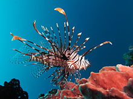

Lionfish are not native to the Atlantic ocean. While human marine life experts believe that their prescence in the Atlantic is due to human activity, it was actually Max Mudpuppy! The Lionfish are wrecking havoc in the Atlantic ocean, where their introduction has changed the delicate predator-prey balance. And they want to see their Lionfish family back home!
Liam wants to go home!
Max has an automated system which abducts Lionfish and takes them to the Atlantic. Liam wants you to try to hack into Max's account and reverse the control, so that Lionfish are sent out of the Atlantic and back home. Click here to go to his homepage.